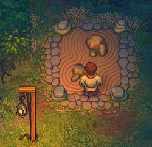
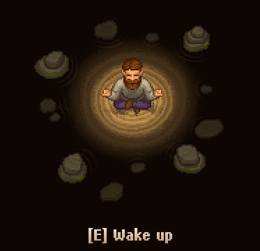

Stone garden
| Stone Garden | |
|---|---|
 | |
Location information
| |
Buildable
|
True |
Exits
|
Workyard |

The stone garden is a quiet place, where you can meditate and let time pass if you want to wait for a specific day. It is located directly northwest of your home. In order to use it, you first have to build it.
Crafting
Just click on the sign northwest of your home.
| Icon | Materials Required | Energy |
|---|---|---|
| 6× A piece of stone |
- |

Usage
Just hit "E" to enter the stone garden and start meditating. You will slowly gain  while doing so. To quit, hit "E" again. Compared to sleeping, the gain of
while doing so. To quit, hit "E" again. Compared to sleeping, the gain of  is slower, but meditation doesn't stop even if you are fully rested.
is slower, but meditation doesn't stop even if you are fully rested.
A full day passes every 45 seconds.
Note: Your game will not be saved here.
This is what it looks like: 

| |||||